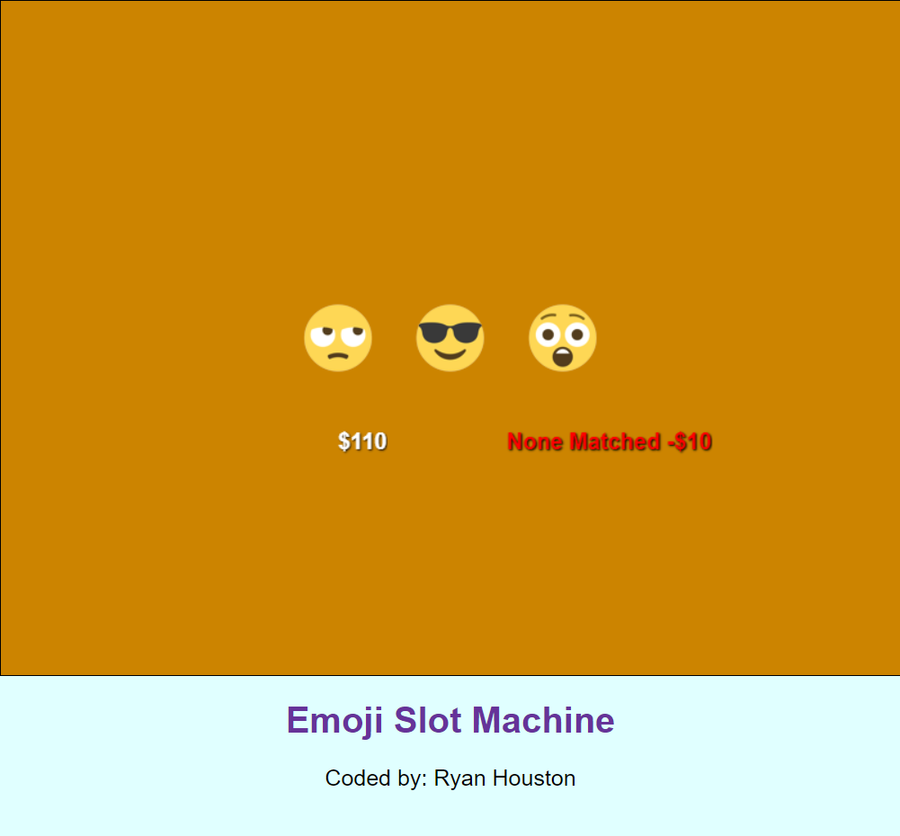
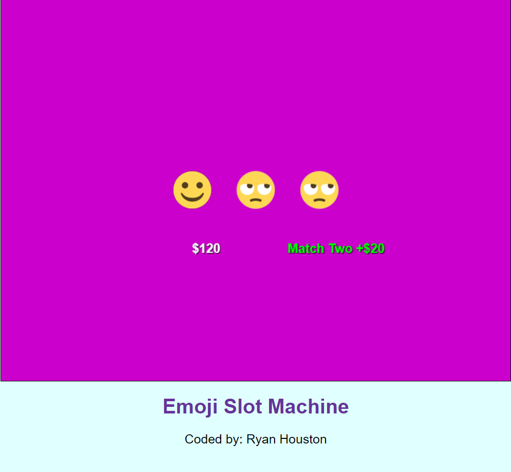
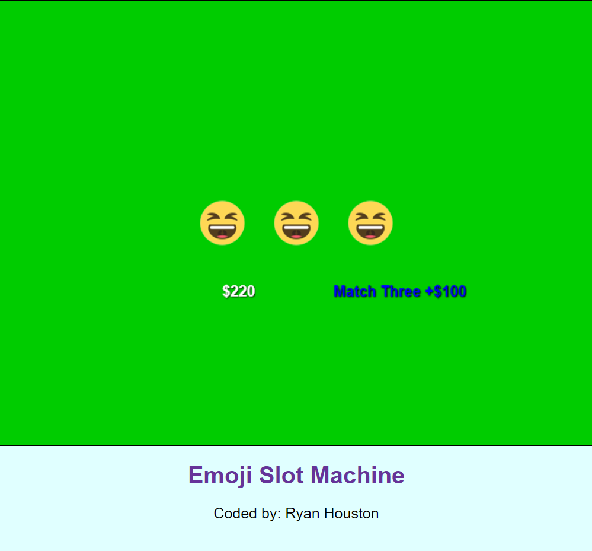
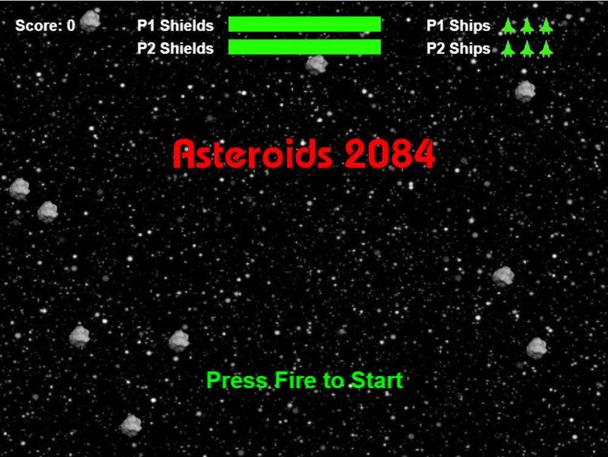
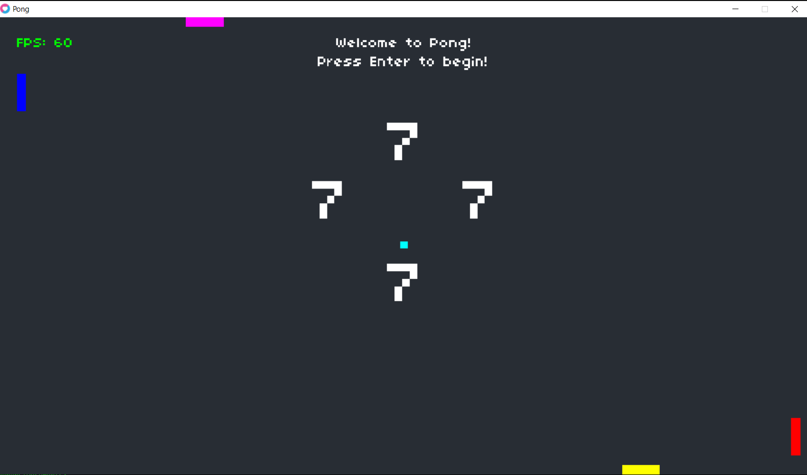

(A winter postcard I made with python turtle)
Projects I've Worked On
Emoji Slot Machine
Requirements for an assignment I made on Replit with javascript:
- Give the user a starting amount of points (100 points recommended)
- When you run out of points, the game can no longer be played, text should show on the screen "Better luck next time, you are out of money. Go home, gambling is bad for your bank account.", and the user has to refresh the page to play again
- Change the background color when certain things happen: no matches, 2 matches, 3 matches, game over - out of money, new high funds amount - new high score
- Any and all funds have the $ in front of it. 
Asteroids
This was a bonus assignment I made on Replit, here are some of the challenges I completed:
- Built out a modern version of Asteroids using steps 1-14 from here.
- Added an enemy ship that activates after a certain score.
- Added another player to make it a co-op game.
- Player earns extra health bar after a certain score.
- Player earns score multiplier for so many seconds after a certain score. 
4 Player Pong
Requirements for an assignment I made with lua:
- No boundaries, paddles on each side.
- Each player has 7 lives, whoever is scored on loses a life, and the first player to lose all their lives ends the game.
- Whoever was scored on gets to serve the ball.
- The serve message must state the correct paddle.
- Change the color of paddles and text for aesthetics. 